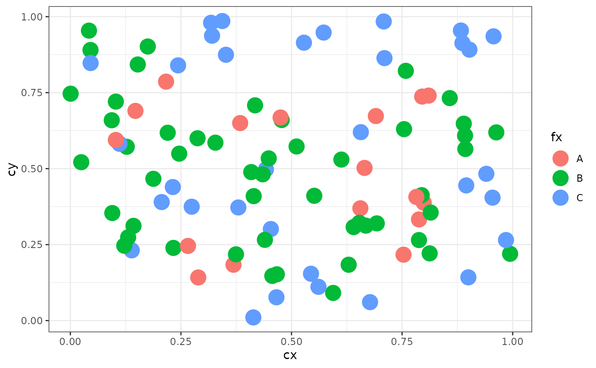
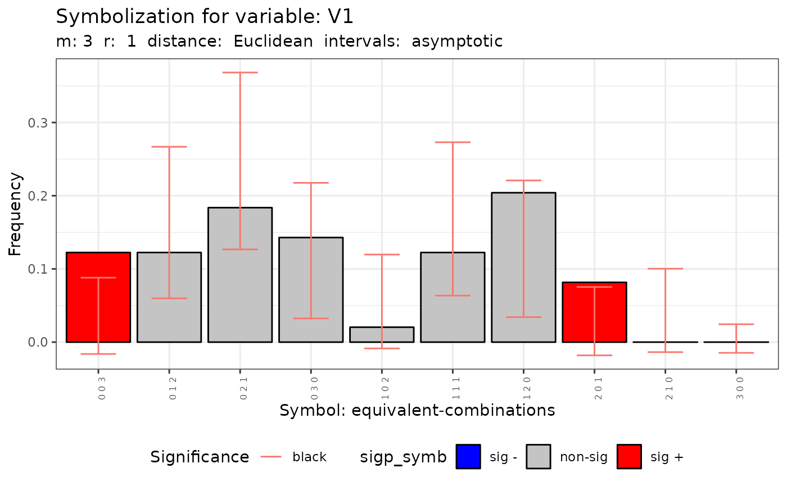
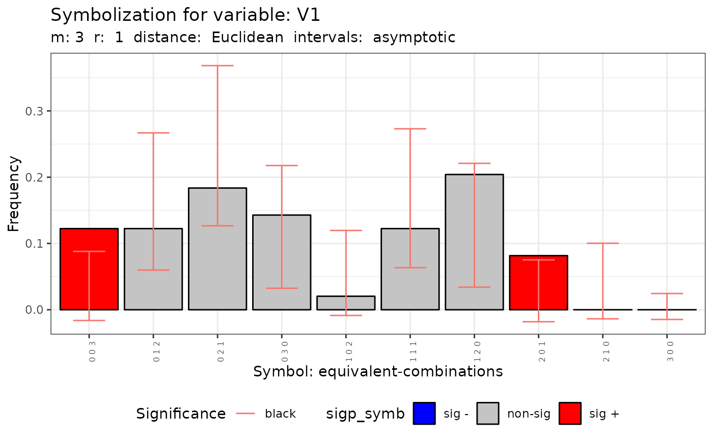
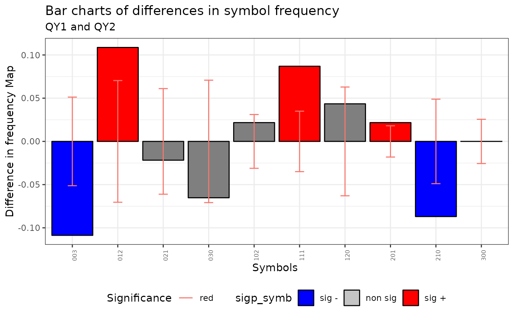
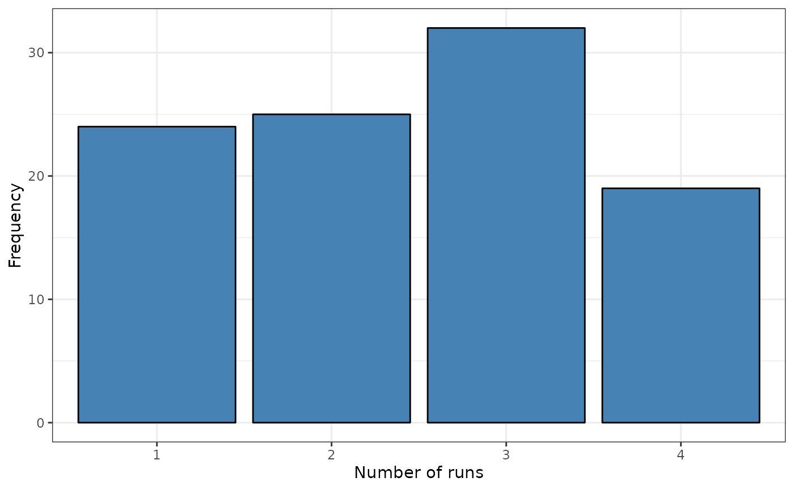
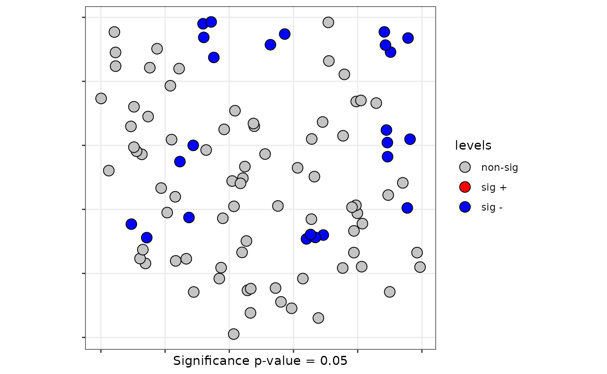
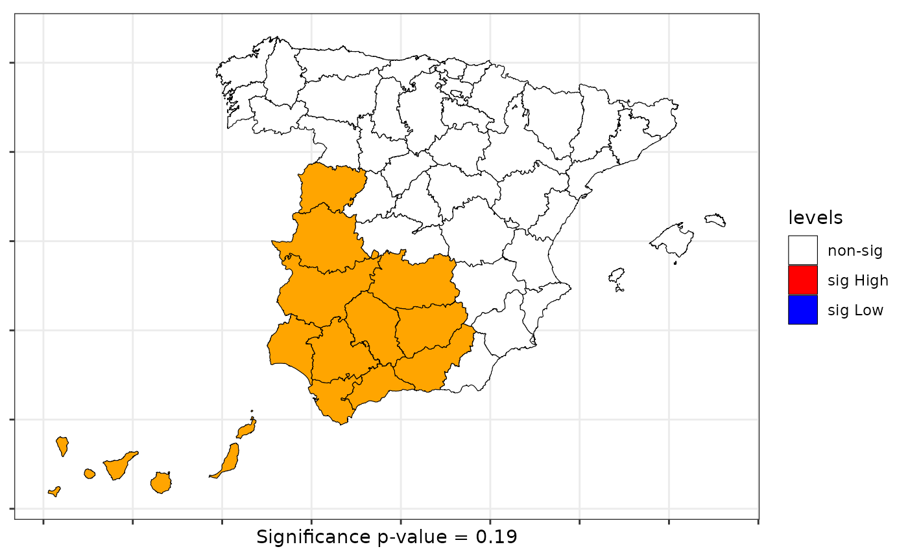

spqdata user guide
The user guide
Fernando A. López, Technical University of Cartagena (Spain)
Román Mínguez, University of Castilla-La Mancha (Spain)
Antonio Páez, McMaster University (Canada)
Manuel Ruiz, Technical University of Cartagena (Spain)
2021-07-04
Source: vignettes/user_guide.Rmd
user_guide.RmdIntroduction
Esta guía está diseñada para mostrar el funcionamiento del paquete spqdata para testar dependencia espacial en datos cualitativos
Datos
En esta guia se usaran dos conjuntos de datos como ejemplos:
Spain: La división de España en provincias. Es una geometría de polígonos que tiene islas
FastFood: El ejemplo de Páez et al en JGS. Es una geometría de puntos
- Se pueden generar datos con estructura espacial
DGP
Es posible generar procesos espaciales con estructura utilizando la función dgp.spq de la misma manera que en Ruiz, López, and Páez (2012a)
rm(list = ls())
set.seed(123)
N <- 100
cx <- runif(N)
cy <- runif(N)
coor <- cbind(cx,cy)
p <- c(1/6,3/6,2/6)
rho = 0.5
listw <- spdep::nb2listw(knn2nb(knearneigh(coor, k = 4)))
fx <- dgp.spq(list = listw, p = p, rho = rho)Un simple plot
ggplot(data.frame(fx=fx,cx=cx,cy=cy), aes(x=cx, y=cy, color=fx)) +
geom_point(size=6) +
theme_bw()
Q test
- El test Q está basado en m-historias
- Se pueden observar las m-historias y generarlas con distintos algoritmos
m-historias
m.surround es la función que genera m-historias.
El output es un objeto de la clase m_surr
El cálculo de las h-historias con una función específica tiene como principal objetivo que el usuario
analice las características del conjunto de m-historias. Mediante el método el usuario puede explorar la coherencia de las m-historias.
Obtain m-surroundings with degree of overlapping r:
m = 3
r = 1
mh <- m.surround(x = cbind(cx,cy), m = m, r = r)
class(mh)## [1] "m_surr" "list"Métodos para la clase m_surr
Hay tres métodos desarrollados para esta clase: print, summary y plot
print lista las m-historias
summary resumen de las carácterísticas de las m-historias
summary(mh)##
## Characteristics of m-surrounding:
##
## Number of m-surrounding (R): 49
## Length of m-surrounding (m): 3
## Number no-symbolized observations: 1
##
## List of no-symbolized observations:
## 16
##
## List of the degree overlaping:
## There are 2 m-surrounding that have intersection with 1 m-surrounding
## There are 47 m-surrounding that have intersection with 2 m-surrounding
## Mean degree of overlaping: 1.9592- plot Muestra la estructura espacial de las m-historias
plot(mh, type = 1)
- El argumento control permite modificar algunas carácterísticas de la m-historia.
- Básicamente con control se pueden ‘podar’ m-historias no coherentes.
control <- list (dtmaxknn = 10)
mh.prune <- m.surround(x = coor, m = m, r = r, control = control)
plot(mh.prune)
El test Q
q.test <- Q.test(fx = fx, coor = coor, m = 3, r = 1)- El output es un objeto de la clase spqtest
- Genera una lista con el resultado para símbolos basados en permutaciones (standard) como en combinaciones (equivalent).
Métodos para spqtest
summary(q.test)| Qualitative Dependence Test (Q) | ||||||||||
|---|---|---|---|---|---|---|---|---|---|---|
| Distribution: asymptotic. Distance: Euclidean | ||||||||||
| Q | df | p.value | k | N | m | r | R | n | R/n | 5k^m |
| V1 - standard-permutations | ||||||||||
| 97.56 | 26 | 0.00000 | 3 | 100 | 3 | 1 | 49 | 27 | 1.81 | 135 |
| V1 - equivalent-combinations | ||||||||||
| 28.39 | 9 | 0.00082 | 3 | 100 | 3 | 1 | 49 | 10 | 4.90 | 135 |
plot(q.test) 

## [[1]]##
## [[2]]


QMap test
El test QMap
p <- c(1/6,3/6,2/6)
rho = 0.5
QY1 <- dgp.spq(p = p, listw = listw, rho = rho)
rho = 0.8
QY2 <- dgp.spq(p = p, listw = listw, rho = rho)
dt = data.frame(QY1,QY2)
m = 3
r = 1
formula <- ~ QY1 + QY2
control <- list(dtmaxknn = 10)
qmap <- Q.map.test(formula = formula, data = dt, coor = coor, m = m, r = r, type ="combinations", control = control)## Warning in Q.map.test(formula = formula, data = dt, coor = coor, m = m, : The
## ratio between the number of symbolized observations and the number of symbols is
## lower than 5.- El output de la función Q.Map es un objeto de la clase qmap y htest
Métodos para clase qmap
- El objeto qmap es una lista con dos elementos. Cada elemento es un objeto de la clase htext
print(qmap[[1]])##
## Q-Map test of Equivalence for qualitative data.
##
## Symbols type: combinations
##
## Ratio Symbolized observations/Num symbols = 4.6
##
## data: QY1 and QY2
## QE = 149.42, df = 9, p-value < 2.2e-16
## alternative hypothesis: two.sided- El método plot obtiene la distribución de simbolos con los intervalos de confianza especificados por el usuario.
plot(qmap, ci=.6)
Runs tests
Global Runs test
- La función sp.runs.test obtiene el test de rachas espacial
listw <- knearneigh(coor, k = 3)
srq <- sp.runs.test(fx = fx, listw = listw)- El output es un objeto de las clases sprunstest y htest
Metodos para clase spruntest
- Hay implementados dos métodos para objetos de esta clase: y
print(srq)##
## Runs test of spatial dependence for qualitative data. Asymptotic
## version
##
## data: mxf
## sp.runs test = -1.0763, p-value = 0.2818
## alternative hypothesis: two.sided
## sample estimates:
## Total runs Mean total runs Variance total runs
## 273.0000 285.5152 135.1986
plot(srq)
Local Runs test asintótico
- Version asintótica
lsrq <- local.sp.runs.test(fx = fx, listw = listw, alternative = "less")- El método print lista los estadísticos
print(lsrq)## runs.i E.i Std.i z.value p.value
## 1 3 2.855152 0.8722689 0.1660594 0.56594492
## 2 4 2.855152 0.8722689 1.3124950 0.90532341
## 3 1 2.855152 0.8722689 -2.1268116 0.01671787
## 4 3 2.855152 0.8722689 0.1660594 0.56594492
## 5 3 2.855152 0.8722689 0.1660594 0.56594492
## 6 3 2.855152 0.8722689 0.1660594 0.56594492
## 7 3 2.855152 0.8722689 0.1660594 0.56594492
## 8 2 2.855152 0.8722689 -0.9803761 0.16345026
## 9 3 2.855152 0.8722689 0.1660594 0.56594492
## 10 4 2.855152 0.8722689 1.3124950 0.90532341
## 11 3 2.855152 0.8722689 0.1660594 0.56594492
## 12 4 2.855152 0.8722689 1.3124950 0.90532341
## 13 2 2.855152 0.8722689 -0.9803761 0.16345026
## 14 2 2.855152 0.8722689 -0.9803761 0.16345026
## 15 3 2.855152 0.8722689 0.1660594 0.56594492
## 16 1 2.855152 0.8722689 -2.1268116 0.01671787
## 17 2 2.855152 0.8722689 -0.9803761 0.16345026
## 18 4 2.855152 0.8722689 1.3124950 0.90532341
## 19 4 2.855152 0.8722689 1.3124950 0.90532341
## 20 3 2.855152 0.8722689 0.1660594 0.56594492
## 21 2 2.855152 0.8722689 -0.9803761 0.16345026
## 22 4 2.855152 0.8722689 1.3124950 0.90532341
## 23 4 2.855152 0.8722689 1.3124950 0.90532341
## 24 1 2.855152 0.8722689 -2.1268116 0.01671787
## 25 4 2.855152 0.8722689 1.3124950 0.90532341
## 26 4 2.855152 0.8722689 1.3124950 0.90532341
## 27 1 2.855152 0.8722689 -2.1268116 0.01671787
## 28 2 2.855152 0.8722689 -0.9803761 0.16345026
## 29 4 2.855152 0.8722689 1.3124950 0.90532341
## 30 3 2.855152 0.8722689 0.1660594 0.56594492
## 31 3 2.855152 0.8722689 0.1660594 0.56594492
## 32 3 2.855152 0.8722689 0.1660594 0.56594492
## 33 3 2.855152 0.8722689 0.1660594 0.56594492
## 34 3 2.855152 0.8722689 0.1660594 0.56594492
## 35 2 2.855152 0.8722689 -0.9803761 0.16345026
## 36 1 2.855152 0.8722689 -2.1268116 0.01671787
## 37 2 2.855152 0.8722689 -0.9803761 0.16345026
## 38 3 2.855152 0.8722689 0.1660594 0.56594492
## 39 3 2.855152 0.8722689 0.1660594 0.56594492
## 40 1 2.855152 0.8722689 -2.1268116 0.01671787
## 41 3 2.855152 0.8722689 0.1660594 0.56594492
## 42 2 2.855152 0.8722689 -0.9803761 0.16345026
## 43 3 2.855152 0.8722689 0.1660594 0.56594492
## 44 2 2.855152 0.8722689 -0.9803761 0.16345026
## 45 4 2.855152 0.8722689 1.3124950 0.90532341
## 46 3 2.855152 0.8722689 0.1660594 0.56594492
## 47 3 2.855152 0.8722689 0.1660594 0.56594492
## 48 2 2.855152 0.8722689 -0.9803761 0.16345026
## 49 3 2.855152 0.8722689 0.1660594 0.56594492
## 50 3 2.855152 0.8722689 0.1660594 0.56594492
## 51 4 2.855152 0.8722689 1.3124950 0.90532341
## 52 1 2.855152 0.8722689 -2.1268116 0.01671787
## 53 2 2.855152 0.8722689 -0.9803761 0.16345026
## 54 3 2.855152 0.8722689 0.1660594 0.56594492
## 55 1 2.855152 0.8722689 -2.1268116 0.01671787
## 56 1 2.855152 0.8722689 -2.1268116 0.01671787
## 57 3 2.855152 0.8722689 0.1660594 0.56594492
## 58 3 2.855152 0.8722689 0.1660594 0.56594492
## 59 3 2.855152 0.8722689 0.1660594 0.56594492
## 60 3 2.855152 0.8722689 0.1660594 0.56594492
## 61 2 2.855152 0.8722689 -0.9803761 0.16345026
## 62 4 2.855152 0.8722689 1.3124950 0.90532341
## 63 4 2.855152 0.8722689 1.3124950 0.90532341
## 64 2 2.855152 0.8722689 -0.9803761 0.16345026
## 65 2 2.855152 0.8722689 -0.9803761 0.16345026
## 66 1 2.855152 0.8722689 -2.1268116 0.01671787
## 67 4 2.855152 0.8722689 1.3124950 0.90532341
## 68 3 2.855152 0.8722689 0.1660594 0.56594492
## 69 3 2.855152 0.8722689 0.1660594 0.56594492
## 70 4 2.855152 0.8722689 1.3124950 0.90532341
## 71 3 2.855152 0.8722689 0.1660594 0.56594492
## 72 1 2.855152 0.8722689 -2.1268116 0.01671787
## 73 3 2.855152 0.8722689 0.1660594 0.56594492
## 74 4 2.855152 0.8722689 1.3124950 0.90532341
## 75 2 2.855152 0.8722689 -0.9803761 0.16345026
## 76 2 2.855152 0.8722689 -0.9803761 0.16345026
## 77 4 2.855152 0.8722689 1.3124950 0.90532341
## 78 2 2.855152 0.8722689 -0.9803761 0.16345026
## 79 4 2.855152 0.8722689 1.3124950 0.90532341
## 80 2 2.855152 0.8722689 -0.9803761 0.16345026
## 81 3 2.855152 0.8722689 0.1660594 0.56594492
## 82 4 2.855152 0.8722689 1.3124950 0.90532341
## 83 3 2.855152 0.8722689 0.1660594 0.56594492
## 84 2 2.855152 0.8722689 -0.9803761 0.16345026
## 85 2 2.855152 0.8722689 -0.9803761 0.16345026
## 86 1 2.855152 0.8722689 -2.1268116 0.01671787
## 87 1 2.855152 0.8722689 -2.1268116 0.01671787
## 88 3 2.855152 0.8722689 0.1660594 0.56594492
## 89 4 2.855152 0.8722689 1.3124950 0.90532341
## 90 4 2.855152 0.8722689 1.3124950 0.90532341
## 91 2 2.855152 0.8722689 -0.9803761 0.16345026
## 92 3 2.855152 0.8722689 0.1660594 0.56594492
## 93 4 2.855152 0.8722689 1.3124950 0.90532341
## 94 3 2.855152 0.8722689 0.1660594 0.56594492
## 95 4 2.855152 0.8722689 1.3124950 0.90532341
## 96 2 2.855152 0.8722689 -0.9803761 0.16345026
## 97 4 2.855152 0.8722689 1.3124950 0.90532341
## 98 2 2.855152 0.8722689 -0.9803761 0.16345026
## 99 3 2.855152 0.8722689 0.1660594 0.56594492
## 100 1 2.855152 0.8722689 -2.1268116 0.01671787- El método plot identifica las localizaciones con test significativos
plot(lsrq, sig = 0.05)
Local Runs test boots
- Version boot (permutaciones) con un objeto sf
data(Spain)
listw <- spdep::poly2nb(as(spain.sf,"Spatial"), queen = FALSE)
plot(spain.sf["MenWoman"])
formula <- ~ MenWoman
# Boots Version
lsrq <- local.sp.runs.test(formula = formula, data = spain.sf, listw = listw, distr ="bootstrap", nsim = 199)
plot(lsrq, sf = spain.sf, sig = 0.10)scan test
De la familia de test scan para identificar clusters definidos para distintas distribuciones hay dos que se aplican a procesos espaciales de tipo cualitativo
El output es un objeto de las clases scantest y htest
Ver Kanaroglou (2016)
El test no necesita la matriz W
El test contrasta la nula de independencia pero añade información adicional señalando uno o varios clústeres con distribición espacial diferencial del resto.
No tiene distribución asintótica. La significatividad se obtiene por remuestreo permutacional
scan bernoulli
- Para porcesos espaciales con dos categorías
formula <- ~ MenWoman
scan.spain <- scan.test(formula = formula, data = spain.sf, case="men", nsim = 99, distr = "bernoulli")
print(scan.spain)##
## Scan test. Distribution: bernoulli
##
## data: MenWoman
## scan-loglik = 4.6665, p-value = 0.19
## alternative hypothesis: High
## sample estimates:
##
## Total observations in the MLC = 13.00
## Expected cases in the MLC = 9.62
## Observed cases in the MLC = 13.00scan multinomial
- Para porcesos espaciales con tres o más categorías
data(FastFood)
formula <- ~ Type
scan.fastfood <- scan.test(formula = formula, data = FastFood.sf, nsim = 99, distr = "multinomial", windows="elliptic", nv = 100)## Warning in scan.test(formula = formula, data = FastFood.sf, nsim = 99, distr
## = "multinomial", : A total of 5 clusters has the same value of the statistic.
## Report as MLC only the firt
print(scan.fastfood)##
## Scan test. Distribution: multinomial
##
## data: Type
## scan-loglik = 130.94, p-value < 2.2e-16
## sample estimates:
## H P S Sum
## cases.expect 31.36 34.55 34.09 100
## cases.observ 42.00 32.00 26.00 100metodos scan
- Hay dos métodos para aplicar a objetos scantest
summary(scan.fastfood)##
## Summary of data:
## Distribution....................: multinomial
## Number of locations.............: 877
## Total number of cases...........: 877
##
## Scan statistic:
## Observed cases in the MLC...: 31.36 34.55 34.09 100
## Expected cases in the MLC...: 42 32 26 100
## Value of statisitic (loglik)....: 130.94
## p-value.........................: 0
##
## IDs of cluster detect:
## Location IDs included..................: 79 104 92 222 257 246 77 733 642 350 573 124 328 155 75 365 282 109 163 756 125 343 831 80 383 43 446 247 702 806 671 42 665 304 227 133 478 645 619 570 466 657 284 866 488 159 195 346 567 147 382 139 253 830 36 728 683 475 392 541 197 293 209 815 385 268 331 128 107 476 423 286 634 323 210 707 746 432 119 730 149 753 775 2 221 238 768 45 585 630 172 17 411 390 502 73 140 747 499 130
plot(scan.spain, sf = spain.sf)## Called from: plot.scantest(scan.spain, sf = spain.sf)
## debug: levels(sf$levels)[levels(sf$levels) == "0"] <- "non-sig"
## debug: if (z$cases.expect > z$cases.observ) levels(sf$levels)[levels(sf$levels) ==
## "1"] <- "sig High"
## debug: if (z$cases.expect < z$cases.observ) levels(sf$levels)[levels(sf$levels) ==
## "2"] <- "sig Low"
## debug: levels(sf$levels)[levels(sf$levels) == "2"] <- "sig Low"
## debug: cols <- c(`non-sig` = "white", `sig High` = "red", `sig Low` = "blue")
## debug: lplot_runs <- ggplot(sf) + geom_sf(aes(fill = levels), color = "black",
## shape = 21, size = mysize) + theme_bw() + theme(axis.text.x = element_blank(),
## axis.text.y = element_blank()) + xlab(paste0("Significance p-value = ",
## z$p.value)) + scale_fill_manual(values = cols, na.value = "orange",
## drop = FALSE)
## debug: lplot_runs
# plot.scantest(scan.fastfood, sf = FastFood.sf)Similarity test
El papel de Farber, Marin, and Páez (2014) desarrolla un test de similaridad
Test de similaridad
la función similarity.test calcula el test de similaridad tanto para distribición asintótica como por remuestreo permutacional.
coor <- cbind(FastFood.sf$Lon,FastFood.sf$Lat)
listw <- spdep::knearneigh(coor, k = 4)
formula <- ~ Type
similarity <- similarity.test(formula = formula, data = FastFood.sf, listw = listw)
print(similarity)##
## Similarity test of spatial dependence for qualitative data.
## Distribution: asymptotic
##
## data: Type
## Similarity-test = -5.4476, p-value = 5.105e-08
## alternative hypothesis: two.sidedJoin-count test
- Se ha wrapeado las funciones de spdep para distribuciones bernoulli y multinomial. Se pueden utilizar distribuciones asintóticas o Monte Carlo (permutaciones)
distribución asintótica
f1 <- ~ Older65 + MenWoman
jc1 <- jc.test(formula = f1, data = spain.sf, distr = "asymptotic", alternative = "greater", zero.policy = TRUE)
summary(jc1)| JoinCount Spatial Tests (asymptotic) | |||||
|---|---|---|---|---|---|
| pairs | z-value | pvalue | Joincount | Expected | Variance |
| Older65 - multinomial - alternative: greater - Join count test under nonfree sampling | |||||
| high:high | −0.33 | 0.62827 | 13 | 13.96 | 8.69 |
| low:low | −0.67 | 0.74783 | 9 | 10.78 | 7.12 |
| middle:middle | −1.21 | 0.88596 | 12 | 15.71 | 9.48 |
| low:high | −0.05 | 0.51838 | 26 | 26.18 | 15.96 |
| middle:high | −1.27 | 0.89830 | 26 | 31.42 | 18.16 |
| middle:low | −0.67 | 0.74805 | 25 | 27.72 | 16.62 |
| Jtot | −1.34 | 0.91040 | 77 | 85.33 | 38.45 |
| MenWoman - binomial - alternative: greater - Join count test under nonfree sampling | |||||
| men-men | −2.17 | 0.98504 | 60 | 68.39 | 14.92 |
| woman-woman | 2.11 | 0.01740 | 13 | 8.01 | 5.59 |
| men-woman | −2.47 | 0.99333 | 38 | 49.39 | 21.19 |
distribución Monte Carlo
jc1 <- jc.test(formula = f1, data = spain.sf, distr = "mc", alternative = "greater", zero.policy = TRUE)
summary(jc1)| JoinCount Spatial Tests (Monte Carlo) | ||||
|---|---|---|---|---|
| pairs | pvalue | Joincount | Expected | Variance |
| Older65 - multinomial - alternative: greater - Monte-Carlo simulation of join-count statistic (nonfree sampling) | ||||
| high:high | 0.39400 | 13 | 12.29 | 9.39 |
| low:low | 0.54000 | 9 | 9.54 | 7.40 |
| middle:middle | 0.69000 | 12 | 13.82 | 10.68 |
| low:high | 0.19500 | 26 | 23.13 | 14.91 |
| middle:high | 0.65500 | 26 | 27.83 | 17.05 |
| middle:low | 0.40700 | 25 | 24.38 | 16.71 |
| Jtot | 0.34200 | 77 | 75.35 | 22.70 |
| MenWoman - binomial - alternative: greater - Monte-Carlo simulation of join-count statistic | ||||
| men-men | 0.51650 | 60 | 60.41 | 22.68 |
| woman-woman | 0.02400 | 13 | 7.01 | 6.32 |
References
Farber, Steven, Manuel Ruiz Marin, and Antonio Páez. 2014. “Testing for Spatial Independence Using Similarity Relations.” Geographical Analysis 47 (2): 97–120. https://doi.org/10.1111/gean.12044.
Kanaroglou, Pavlos. 2016. Spatial Analysis in Health Geography. Routledge. https://doi.org/10.4324/9781315610252.
Ruiz, Manuel, Fernando López, and Antonio Páez. 2012a. “Comparison of Thematic Maps Using Symbolic Entropy.” International Journal of Geographical Information Science 26 (3): 413–39. https://doi.org/10.1080/13658816.2011.586327.
———. 2012b. “Comparison of Thematic Maps Using Symbolic Entropy.” International Journal of Geographical Information Science 26 (3): 413–39. https://doi.org/10.1080/13658816.2011.586327.